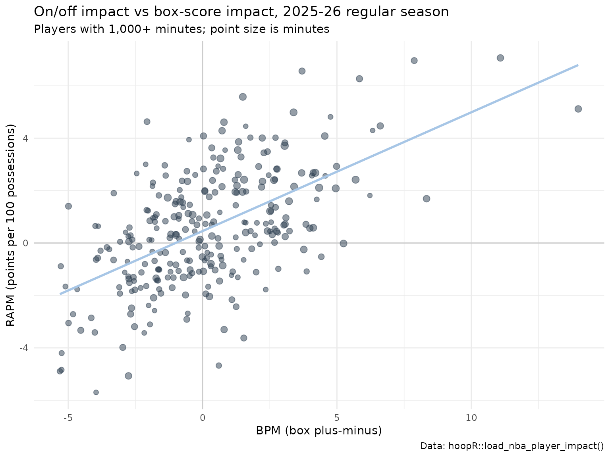

NBA Player Impact Model: RAPM, SPM, BPM, DARKO-Style Projections and WAR
Saiem Gilani
Source:vignettes/articles/nba-player-impact-model.Rmd
nba-player-impact-model.RmdHow much better does a team play with a given player on the
floor, after accounting for everyone else out there? That is
the question every player-impact metric tries to answer.
load_nba_player_impact() returns the SportsDataverse’s
answer for every NBA player-season since 1997: six estimates side by
side, from a pure on/off regression (RAPM) to a box-score model (BPM), a
forward-looking projection (DARKO-style) and a wins figure (WAR). This
article explains what each column estimates, how the suite is built, how
well it validates, and where it is weakest.
The official model card, with the full evaluation, lives in the data repository: player_impact.md. Numbers below are either computed in this article from the published release, or quoted from the card and labeled “as reported in the model card”.
What does the dataset contain?
One row per player, season and season type (regular season and playoffs), on a per-100-possession scale where noted.
| Engine | Columns | What it estimates |
|---|---|---|
| RAPM |
o_rapm, d_rapm, rapm,
off_poss, def_poss
|
Regularized adjusted plus-minus: a ridge regression of possession outcomes on who was on the floor. Points added per 100 possessions on offense and saved on defense. |
| adj-RAPM |
o_adj_rapm, d_adj_rapm,
adj_rapm
|
RAPM shrunk toward a box-score prior (the previous season’s SPM) instead of toward zero. |
| SPM |
ospm, dspm, spm
|
Statistical plus-minus: a ridge regression that predicts RAPM from per-100 box-score stats. |
| BPM 2.0 |
obpm, dbpm, bpm
|
Box plus-minus from box-score logs and listed positions. |
| DARKO-style |
boban_filtered_skill,
boban_projected_rating,
boban_projected_sd
|
A Kalman filter over each player’s RAPM history with an aging curve: a current skill estimate and a projection for next season. |
| WAR | war |
Wins above replacement: RAPM times a calibrated points-per-win factor, relative to a replacement level of -2.0. |
Plus identifiers and playing time: player_id (NBA Stats
person id), player_name, team_id,
team_abbreviation, teams, season,
season_type, min and gp.
library(hoopR)
library(dplyr)
library(ggplot2)
impact <- load_nba_player_impact(seasons = 2024:2026)
impact |>
count(season, season_type) |>
tidyr::pivot_wider(names_from = season_type, values_from = n)
#> # A tibble: 3 × 3
#> season Playoffs `Regular Season`
#> <int> <int> <int>
#> 1 2024 214 572
#> 2 2025 219 569
#> 3 2026 230 582How is the suite built?
The model card describes the pipeline; in summary:
-
Possessions. Every game’s NBA Stats play-by-play,
rotation and box-score data are compiled into possessions with the ten
players on the floor. This is the same kind of possession frame
load_nba_stats_possessions()publishes. -
RAPM. A ridge regression over those possessions,
one column per player on offense and on defense, estimates each player’s
offensive and defensive effect. The ridge penalty shrinks players with
little playing time toward zero, which is what keeps RAPM stable enough
to use. In the published data,
o_rapmandd_rapmare centered: their mean over a season is zero. - SPM. Once per season, a ridge regression is fit with box-score rates as inputs and the regular-season RAPM as the target. Playoffs are not used to fit it: a short playoff sample would train noise on noise.
- adj-RAPM. RAPM refit with a prior: instead of shrinking toward zero, each player shrinks toward the previous season’s possession-weighted blend of his regular-season and playoff SPM. A gap season breaks the chain on purpose.
- BPM 2.0. An independent box-score model using box logs and listed positions.
- DARKO-style projection. A per-season Kalman filter step over the RAPM panel with an aging curve. Playoff form enters as a possession-weighted blend, not as a second time step, so a season of aging is not applied twice.
- WAR. RAPM converted to wins with a calibrated points-per-win factor, against a replacement level of -2.0.
Seasons are built in order, earliest first, because SPM, adj-RAPM and DARKO carry information forward from one season to the next.
How do the engines relate to each other?
RAPM and adj-RAPM should agree closely (the prior stabilizes, it does not overwrite), the box-score engines should agree with each other, and each family should agree only partly with the other.
rs_2026 <- impact |>
filter(season == 2026, season_type == "Regular Season")
rs_2026 |>
select(rapm, adj_rapm, spm, bpm, boban_filtered_skill, war) |>
cor(use = "pairwise.complete.obs") |>
round(2)
#> rapm adj_rapm spm bpm boban_filtered_skill war
#> rapm 1.00 0.91 0.43 0.42 1.00 0.84
#> adj_rapm 0.91 1.00 0.52 0.46 0.90 0.80
#> spm 0.43 0.52 1.00 0.85 0.42 0.45
#> bpm 0.42 0.46 0.85 1.00 0.41 0.45
#> boban_filtered_skill 1.00 0.90 0.42 0.41 1.00 0.83
#> war 0.84 0.80 0.45 0.45 0.83 1.00In the 2025-26 regular season, RAPM and adj-RAPM correlate at r = 0.908 across 582 players (the model card reports 0.913 for the same comparison).
rs_2026 |>
filter(min >= 1000) |>
ggplot(aes(bpm, rapm)) +
geom_hline(yintercept = 0, colour = "grey80") +
geom_vline(xintercept = 0, colour = "grey80") +
geom_point(aes(size = min), alpha = 0.5, colour = "#2C3D50") +
geom_smooth(method = "lm", se = FALSE, colour = "#A7C6E6") +
scale_size_area(max_size = 3, guide = "none") +
labs(
title = "On/off impact vs box-score impact, 2025-26 regular season",
subtitle = "Players with 1,000+ minutes; point size is minutes",
x = "BPM (box plus-minus)", y = "RAPM (points per 100 possessions)",
caption = "Data: hoopR::load_nba_player_impact()"
) +
theme_minimal()
What does the SPM model lean on?
The fitted SPM coefficients are published beside the release as
nba_player_impact_spm_coefficients.json, one record per
season. Because the coefficients apply to per-100 rates with very
different spreads, multiplying each coefficient by its feature’s
standard deviation gives a comparable measure of importance:
spm_url <- paste0(
"https://github.com/sportsdataverse/sportsdataverse-data/releases/download/",
"nba_player_impact/nba_player_impact_spm_coefficients.json"
)
spm <- tryCatch(jsonlite::fromJSON(spm_url), error = function(e) NULL)
if (!is.null(spm)) {
rec <- spm$records
i <- which(rec$season == 2026)
coefs <- tibble(
feature = rec$feature_names[[i]],
o_coef = rec$o_coef[[i]],
d_coef = rec$d_coef[[i]],
feature_sd = rec$feature_sd[[i]]
) |>
mutate(o_importance = abs(o_coef) * feature_sd,
d_importance = abs(d_coef) * feature_sd) |>
arrange(desc(o_importance + d_importance))
cat("2026 fit:", rec$n_players_fit[i], "regular-season players, ridge alpha =",
rec$ridge_alpha[i], ", train r(SPM, RAPM) =", round(rec$train_r_spm_vs_rapm[i], 3), "\n")
coefs |> mutate(across(where(is.numeric), \(x) round(x, 3)))
}
#> 2026 fit: 582 regular-season players, ridge alpha = 100 , train r(SPM, RAPM) = 0.431
#> # A tibble: 11 × 6
#> feature o_coef d_coef feature_sd o_importance d_importance
#> <chr> <dbl> <dbl> <dbl> <dbl> <dbl>
#> 1 pts 0.112 0.007 7.30 0.815 0.048
#> 2 fga -0.047 -0.02 4.97 0.236 0.1
#> 3 ast 0.079 0.023 2.71 0.214 0.062
#> 4 dreb 0.032 0.064 2.75 0.089 0.176
#> 5 tov -0.148 -0.056 1.29 0.19 0.073
#> 6 blk -0.067 0.194 0.951 0.064 0.184
#> 7 stl 0.022 0.208 0.878 0.02 0.183
#> 8 oreb 0.046 0.045 1.90 0.088 0.085
#> 9 fg3m 0.008 0.072 1.57 0.013 0.112
#> 10 pf -0.016 -0.045 1.64 0.026 0.074
#> 11 fta -0.002 -0.015 2.89 0.007 0.044Scoring volume drives the offensive side and steals, blocks and defensive rebounds the defensive side, which is the usual shape of a box-score plus-minus. The training correlation between SPM and its RAPM target is moderate by design: the box score misses much of what RAPM sees (screens, spacing, help defense).
How well does it validate?
Year-over-year reliability
A rating that measures something real about a player should persist from one season to the next. We correlate each player’s regular-season RAPM with his RAPM the following season:
rs <- impact |>
filter(season_type == "Regular Season") |>
distinct(player_id, season, .keep_all = TRUE)
pairs <- rs |>
select(player_id, season, rapm, bpm, boban_projected_rating) |>
inner_join(rs |> transmute(player_id, season = season - 1, rapm_next = rapm, bpm_next = bpm),
by = c("player_id", "season"))
pairs |>
group_by(season) |>
summarise(
n = n(),
rapm_yoy = cor(rapm, rapm_next),
bpm_yoy = cor(bpm, bpm_next),
boban_forward_r = cor(boban_projected_rating, rapm_next),
boban_forward_mae = mean(abs(boban_projected_rating - rapm_next)),
carry_forward_mae = mean(abs(rapm - rapm_next))
) |>
mutate(across(-c(season, n), \(x) round(x, 3)))
#> # A tibble: 2 × 7
#> season n rapm_yoy bpm_yoy boban_forward_r boban_forward_mae
#> <dbl> <int> <dbl> <dbl> <dbl> <dbl>
#> 1 2024 447 0.361 0.346 0.356 1.55
#> 2 2025 464 0.347 0.37 0.334 1.68
#> # ℹ 1 more variable: carry_forward_mae <dbl>Here season is the season the projection was made in.
Single-season RAPM is noisy: its year-over-year correlation is modest.
The box-score BPM is somewhat more stable in these seasons, because
box-score rates stabilize faster than on/off differentials. Over the
full 1997-2026 history, as reported in the model card, RAPM’s
year-over-year reliability is 0.357 across 11,272 player pairs.
DARKO-style forward validation
boban_projected_rating is made with information through
season t only, so comparing it with realized RAPM in season
t + 1 is an honest out-of-sample test. The table above includes
that test for the seasons loaded here, plus a “carry-forward” baseline
that simply assumes next season’s RAPM equals this season’s. As reported
in the model card:
- The possession-weighted mean forward correlation is 0.362 over 28 season pairs.
- Much of the shortfall is target noise: holding the projection and players fixed and averaging the target over two or three future seasons lifts the correlation from about 0.37 to about 0.44.
- The projection does not beat carry-forward RAPM on ranking
(their correlations are within about 0.01), but it has lower mean
absolute error against every target. Read
boban_projected_ratingas a better-calibrated magnitude, not a better ordering.
Agreement with an external RAPM
As reported in the model card, over the 14 seasons 2010-2023 the suite’s RAPM correlates with Ryan Davis’s published single-season RAPM at r = 0.948 to 0.990, and beats a minutes-played baseline by 0.60 to 0.75 correlation points. Those observations are frozen as publish floors, so a release whose RAPM drifted from them would be blocked.
Who rated highest in 2025-26?
rs_2026 |>
filter(min >= 500) |>
arrange(desc(war)) |>
select(player_name, team_abbreviation, gp, min, rapm, adj_rapm, bpm, war) |>
mutate(min = round(min), across(rapm:war, \(x) round(x, 2))) |>
head(15)
#> # A tibble: 15 × 8
#> player_name team_abbreviation gp min rapm adj_rapm bpm war
#> <chr> <chr> <int> <dbl> <dbl> <dbl> <dbl> <dbl>
#> 1 Shai Gilgeous-Alexa… OKC 68 2261 7.06 8.11 11.1 22.6
#> 2 Dyson Daniels ATL 76 2523 5.58 5.01 1.5 21.5
#> 3 Derrick White BOS 77 2623 4.99 4.99 3.39 19.4
#> 4 Chet Holmgren OKC 69 1997 6.56 6.31 3.7 19.1
#> 5 Victor Wembanyama SAS 64 1867 6.96 7.62 7.88 18.5
#> 6 Kawhi Leonard LAC 65 2087 6.27 6.08 5.84 18.4
#> 7 Amen Thompson HOU 79 2954 3.71 3.68 3.05 18.0
#> 8 Bam Adebayo MIA 73 2363 4.61 4.88 0.8 17.7
#> 9 Nikola Jokić DEN 65 2265 5.12 7.35 14.0 17.4
#> 10 Donovan Mitchell CLE 70 2341 4.08 4.44 4.55 16.0
#> 11 Julian Champagnie SAS 82 2267 4.28 3.54 0.73 15.8
#> 12 Nickeil Alexander-W… ATL 78 2603 3.23 2.26 0.67 15.5
#> 13 Donte DiVincenzo MIN 82 2497 3.55 3.14 1.31 15.4
#> 14 Cade Cunningham DET 64 2172 4.47 4.54 6.61 15.4
#> 15 OG Anunoby NYK 67 2226 3.86 3.36 1.34 14.1Read the leaderboard as tiers, not a strict ranking (see the uncertainty note below).
How do I reproduce or extend it?
-
Use the published ratings:
load_nba_player_impact(seasons = 1997:2026)orseasons = TRUEfor every season. -
Fit RAPM yourself:
load_nba_stats_possessions()publishes the possession frame with the ten players on the floor, andnba_rapm()fits a ridge RAPM on it in a few seconds. The RAPM model article walks through that fit and compares it with this release. Its design differs from the suite’s (see that section), so expect close but not identical numbers. -
Join to other data:
player_idis the NBA Stats person id, the same key asload_nba_stats_*()andnba_*()functions; the crosswalk functions map it to ESPN ids.
Limitations
- No intervals yet. No engine ships a standard error. As reported in the model card, a prototype that resampled whole games over the 2023-24 regular season (25 replicates) found a median RAPM standard error of 2.60 per 100 possessions for players with 1,000+ possessions, wider than the 1.41 cross-sectional standard deviation of RAPM in the same group. Single-season RAPM differences between two good players are usually not meaningful.
- Collinearity. Players who almost always share the floor are hard to separate; the ridge penalty splits credit between them rather than resolving it.
- Box-score blind spots. SPM and BPM only see what reaches the box score.
- WAR inherits RAPM’s noise. It is a rescaling of RAPM, not an independent estimate.
- Season types. Play-in games are not modeled as a separate season type.
Where to go next
-
College basketball RAPM
model, including a hands-on
nba_rapm()fit. - Basketball advanced metrics for the box-score rates SPM and BPM are built from.
- College basketball player value model, the college box plus-minus.
- Getting Started with hoopR and the NBA cookbook.
- Reference:
load_nba_player_impact()in the Model Dataset Loaders section.